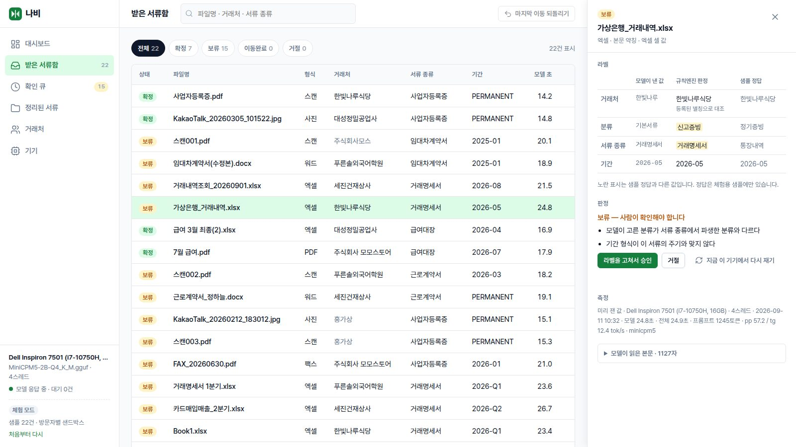

버려지는 PC가 세무·회계 서류를 정리합니다
클라우드에 넣을 수 없는 고객 서류를, 사무실 구석의 낡은 PC가 CPU만으로 읽고 라벨을 붙여 표준 폴더에 정리합니다. 외부 API 호출 0.
GPU 없음 · 인터넷 없이 동작 · 공개 코어 Apache-2.0

세무사·회계사는 고객 재무 정보에 법적 비밀유지 의무를 집니다(세무사법 제11조·제22조, 공인회계사법 제20조·제53조). 그래서 고객 서류를 ChatGPT에 넣을 수 없고, 온프레미스 AI 장비는 수천만 원입니다. 결국 「KakaoTalk_20260710.jpg」 「Scan_001.pdf」를 사람이 한 장씩 열어 정리합니다.
나비는 이미 갖고 있거나 버리려던 PC에서 돕니다 — 서류는 기기를 떠나지 않습니다.작동 방식
세 조각으로 버려진 기기가 비서가 됩니다
기기를 되살리고, 설치기가 그 기기에 맞게 세팅하고, 에이전트 쉘이 일을 맡습니다. 첫 일은 서류 라벨링입니다.
되살리기
버려지는 PC·폰을 비서 전용기로 씁니다. GPU를 요구하지 않습니다 — 조건은 CPU가 있을 것 하나입니다.
설치기
기기를 재서 추론 엔진 빌드(AVX1/AVX2/ARM)·모델 크기·스레드 수와 코어 고정을 자동으로 고릅니다. 같은 기기가 설정 하나로 5.3배 느려질 수 있어서입니다.
기능
사무소가 실제로 쓰는 규칙으로 정리합니다
라벨은 네 축, 폴더와 파일명은 실무 표준, 확신이 낮으면 보류. 모든 이동은 되돌릴 수 있고 대장은 지워지지 않습니다.
라벨링 4축
거래처 · 분류 · 서류 종류(15종) · 기간. 소형 언어모델이 본문을 읽고 네 값을 JSON으로 냅니다.
보류와 확인 큐
거래처가 목록에 없거나 기간 형식이 주기와 어긋나면 옮기지 않고 사람에게 넘깁니다. 보류는 오류가 아니라 정식 출력입니다.
실무 표준 폴더·파일명
[거래처]/[연도]/01_원천세_급여 같은 폴더와 [거래처]_[귀속시기]_[서류명] 파일명. 규칙엔진이 만듭니다.
스캔 · 팩스 · 카톡 사진
텍스트 PDF · 엑셀 · 한글 · 워드는 물론 스캔 PDF·팩스·JPG도 기기 안의 OCR(Tesseract 한국어)로 읽습니다.
되돌리기 · 감사 기록
이동은 옮기기 + 기록이라 언제든 되돌립니다. 대장은 덧붙이기만 해서 누가 언제 무엇을 승인했는지 지워지지 않습니다.
오프라인 · 외부 호출 0
모델은 기기 안에서 돌고 외부 API를 부르지 않습니다. 설치가 끝나면 인터넷을 끊어도 됩니다.
AI 활용 방식
언어모델이 하는 일은 한 칸뿐입니다
파일을 열어 글자를 뽑는 것도, 판정도, 폴더 경로도 규칙이 합니다. 그래서 2B급 모델로 충분하고, 모델이 틀려도 파일이 사라지지 않습니다.
결정론
문서 이해만
결정론
사람
결정론
소형 언어모델(MiniCPM5-2B, CPU에서 llama.cpp로 구동)은 파서가 뽑은 본문을 읽고 「거래처 · 분류 · 서류 종류 · 기간」 네 값을 JSON으로 내는 일만 합니다. 출력은 JSON 스키마로 문법을 강제하고 서류 종류는 15종 어휘로 고정합니다.
규칙엔진이 그 값을 등록 거래처 목록과 대조하고(「한빚나루식당」 → 「한빛나루식당」), 기간 형식이 서류의 주기와 맞는지 검사한 뒤 표준 폴더 경로를 만듭니다. 어긋나면 보류로 확인 큐에 올리고, 사람이 고쳐서 승인한 수정은 별칭으로 규칙에 되돌아갑니다. 파일 1건 = 세션 1회로 KV 캐시를 새로 열어 서류 사이에 문맥이 섞이지 않게 하고, 같은 설정으로 발열을 잡습니다.
실측
우리가 직접 잰 값만 적습니다
재지 못한 것은 「예정」, 조사로 잡은 기준은 「조사 기준」이라고 씁니다. 목표에 못 미치는 값도 고치지 않고 그대로 둡니다.
| 정확도 — 서류 22건 (MiniCPM5-2B, 규칙 통과 후) | 텍스트 서류 14건 | 스캔 · 팩스 · 사진 8건 |
|---|---|---|
| 거래처 | 93% | 38% |
| 서류 종류 | 64% | 38% |
| 기간 | 86% | 50% |
| 네 라벨 전부 | 57% | 38% |
목표에 못 미치는 값이고, 고치지 않고 그대로 적었습니다. 틀린 것의 대부분은 「보류」로 사람에게 넘어갑니다. 서류 종류를 가르는 단서를 프롬프트에 주는 개선을 시험하는 중이고, 샘플을 100건으로 늘려 다시 잽니다. 거래처 93%는 규칙엔진이 만든 값입니다 — 모델이 「한빚나루식당」이라고 내놓은 것을 등록 목록과 대조해 고쳐 붙였습니다. 출처 2026-09-10 실측.
지원 기기
조건은 하나, CPU가 있을 것
같은 프로그램이 2020년 노트북에서도 6GB 폐폰에서도 돕니다. 설치기가 기기를 재서 맞는 빌드·모델·스레드를 고릅니다.
폐PC 실측
2013년 이전 AVX1 CPU 포함 — 공식 llama.cpp 바이너리가 죽는 PC도 설치기가 맞는 빌드를 고릅니다.
폐폰 실측
RAM 6GB 이상 · 2019년 이후 칩셋 (조사 기준). 전원에 꽂아 두고 씁니다.
미니PC 예정
Intel N100 8GB — 체험 인스턴스가 될 기기입니다. 실측 후 여기에 적습니다.
SBC 예정
Raspberry Pi 5. ARM dotprod 빌드로 같은 코어가 돕니다.
요금
코어는 공개, 쉘은 구독
라벨링 엔진·규칙엔진·확인 큐는 Apache-2.0으로 공개합니다. 사무소가 돈을 내는 것은 그 위에서 일을 맡기는 쉘과 정비된 기기입니다.
공개 코어 무료
- 설치기 (기기 자동 최적화)
- 라벨링 엔진 · 규칙엔진
- 확인 큐 · 되돌리기 · 감사 기록
- 로컬 화면 (이 사이트의 체험과 같은 화면)
FAQ
자주 묻는 것
Ollama · LM Studio와 무엇이 다른가요?
그 도구들은 모델을 「돌리는」 도구이고, 나비는 서류를 「정리하는」 일을 맡는 비서입니다. 2013년 이전 PC(AVX1)와 6GB 폐폰까지 설치기가 빌드·모델·스레드를 자동으로 고르고, 그 위에 확인 큐·표준 폴더 규칙·되돌리기·감사 기록이 들어 있습니다. 모델을 띄우는 것이 아니라 일이 끝나는 것이 목표입니다.
서류가 밖으로 나가나요?
아니요. 모델은 기기 안에서 돌고 외부 API를 부르지 않습니다. 설치가 끝나면 인터넷을 끊어도 됩니다. 이 사이트의 체험도 우리가 준비한 샘플 서류(가명)만 다루고 방문자의 파일은 받지 않습니다.
어떤 PC면 되나요?
CPU가 있으면 됩니다. GPU는 쓰지 않습니다. 설치기가 CPU 명령어(AVX1/AVX2/ARM)·RAM·코어 구성·메모리 대역폭을 재서 그 기기에 맞는 추론 엔진 빌드와 모델 크기(2B 기본)를 고릅니다. 우리가 실제로 돌린 가장 낮은 기기는 6GB Galaxy A34입니다.
정확도는 어느 정도인가요?
위 실측표 그대로입니다 — 텍스트 서류 14건에서 네 라벨 전부 57%, 스캔·사진 8건에서 38%. 목표에 못 미치고, 그래서 확신이 낮으면 「보류」가 정식 출력입니다. 틀린 것의 대부분이 보류로 사람에게 넘어가고, 사람이 고친 수정은 별칭으로 규칙에 되돌아갑니다. 100건으로 다시 잽니다.
왜 2B 모델인가요?
언어모델이 하는 일이 한 칸(본문을 읽고 4축 JSON)뿐이라 큰 모델이 필요 없고, 2B급이면 CPU만으로 서류 1건을 노트북에서 18.7초, 폐폰에서 1분 반 안에 읽습니다(실측). 판정과 경로는 규칙엔진이 하므로 모델이 틀려도 파일이 사라지지 않습니다. 우리가 잰 두 모델(MiniCPM5-2B · Qwen2.5-1.5B) 중 더 정확한 쪽을 기본으로 골랐습니다.
사용 도구 · 라이선스
전부 공개된 것 위에 서 있습니다
| 구분 | 도구 | 라이선스 |
|---|---|---|
| 추론 엔진 | llama.cpp (CPU 빌드 — AVX1 / AVX2 / ARM) | MIT |
| 모델 | MiniCPM5-2B (기본) · Qwen2.5-1.5B-Instruct (저사양 후보) — Hugging Face 배포본 | Apache-2.0 |
| OCR | Tesseract 5 + 한국어 데이터 | Apache-2.0 |
| 파서 | PyMuPDF · openpyxl · python-docx · hwpx 파서 | 각 라이선스 |
| 우리 코드 | 설치기 · 라벨링 엔진 · 규칙엔진 · 확인 큐 · 이 화면 (파이썬 표준 라이브러리) | Apache-2.0 (공개 준비 중) |
| 개발 도구 | Claude Code · Antigravity (설계·구현·실측 자동화에 사용) | — |